Immersione topologica dello spazio di Baire nello spazio di Cantor
Proposizione
Prove that the map 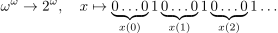 is a (topological) embedding, and argue that this provides an alternative proof of the fact that 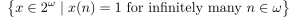 is a dense Polish subspace of 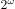. In contrast, show that cannot be embedded as a dense subset in 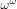.
[Hint. Use compactness.]
Dimostrazione
Prima parte
Sia 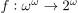 la funzione descritta. Sia, per ogni  :
:
Si costruisce quindi l’$ω$-schema associato ad  :
:
Si applica il lemma 1.3.9.
- Si ha che
 è aperto in
è aperto in  , per definizione di topologia prodotto (sono insiemi con un numero finito di componenti fissate).
, per definizione di topologia prodotto (sono insiemi con un numero finito di componenti fissate). Sia
e siano 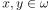, 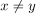. Supponiamo per assurdo che 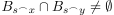, ovvero
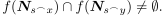Dunque esistono 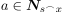, 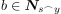 tali che 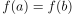. Siccome
è iniettiva, 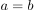, ma 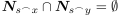. Assurdo.
Per il punto (c) si ha che è una immersione topologica.
Seconda parte
Sia
Si ha che 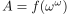. Infatti, l’inclusione `` ’’ è ovvia. Per il viceversa, si definisce per ogni 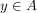, l’insieme
’’ è ovvia. Per il viceversa, si definisce per ogni 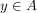, l’insieme
Si ordina 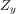 in maniera crescente, 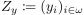.
Si definisce 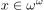 come:
e si ottiene che 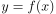.
Questo dimostra che  è un sottospazio polacco di , poiché omeomorfo a
è un sottospazio polacco di , poiché omeomorfo a  spazio polacco.
spazio polacco.
Inoltre, sia 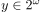, e sia, per ogni  :
:
Allora 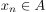 e 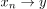, in quanto, considerata la distanza su :
per ogni  esiste 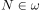, 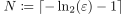 tale che per ogni 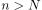: 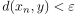. Quindi è denso in , per la caratterizzazione della chiusura per successioni.
esiste 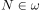, 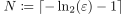 tale che per ogni 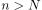: 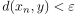. Quindi è denso in , per la caratterizzazione della chiusura per successioni.
Terza parte
Lo spazio è metrizzabile, e pertanto T2.
Supponiamo che per assurdo esista 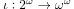 immersione topologica tale che 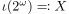 sia denso in .
Siccome è compatto, allora  è compatto, ed inoltre
è compatto, ed inoltre  . Ma in uno spazio di Hausdorff i compatti sono chiusi, e pertanto
. Ma in uno spazio di Hausdorff i compatti sono chiusi, e pertanto
Questo è un assurdo, poiché non è compatto.